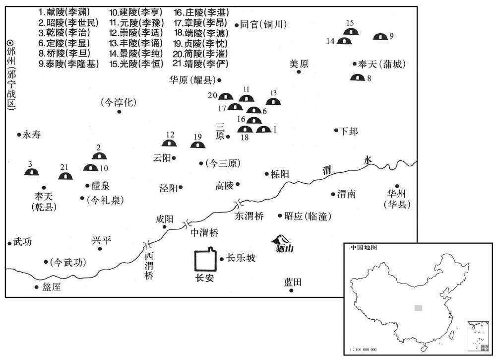
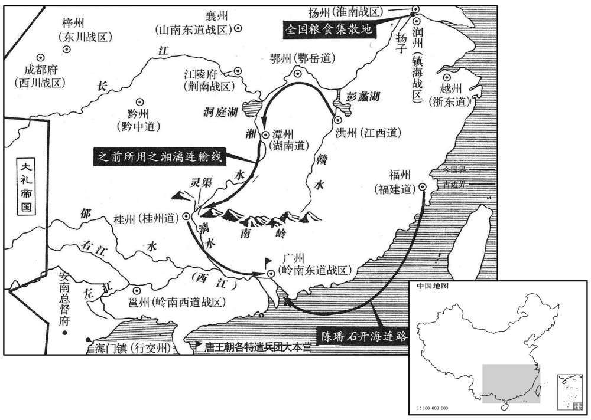

公元863年资治通鉴：本年记事、原文与白话对照
按原书编年位置阅读；追叙和史论不等于本年发生的事件。白话采用所据译本，缺译不以生成译文补齐。
卷250 · 本年记事
公元863年 · 唐懿宗昭圣恭惠孝皇帝咸通四年
四年〔（癸未、八六三）〕
上传原文的注释括号有异常，字符原样保留；无法可靠划分的段落默认全文显示。
本年事件索引（现代整理）

本年形势与背景参考图

本年形势与背景参考图
春，正月，庚午，上祀圜丘；赦天下。
春季，正月，庚午（初十），唐懿宗举行祀圆丘大典礼；宣告大赦天下。
是日，南诏陷交趾，蔡袭左右皆尽，徒步力战，身集十矢，欲趣监军船，〔趣，七喻翻。〕船已离岸，遂溺海死；〔离，力智翻。蔡袭死矣，而十必死之状，曾无朝臣一人为之申理。自是之后，唐之纪纲大坏，凡藩镇有片言只字，则朝廷耸动，惟恐拂其意，朝臣反与之关通，依以为外主矣。〕幕僚樊绰携其印浮渡江。〔自白州博白县西南百里下北戍滩，出马门江，渡海，抵安南界。樊绰携印渡处，即此江。〕荆南、江西、鄂岳、襄州将士四百余人，走至城东水际，荆南虞候元惟德等谓众曰：「吾辈无船，入水则死，不若还向城与蛮鬬，人以一身易二蛮，亦为有利。」遂还向城，入东罗门；〔东罗门，安南罗城东门也。」〕蛮不为备，惟德等纵兵杀蛮二千余人〔考异曰：实录：「二月安南经略使蔡袭奏：『蛮贼杨思僭、罗伏州扶耶县令麻光高部领其众五六千人，于城西角下营。』岭南东道节度使韦宙奏：『蛮贼去十二月二十七日，逼安南城池，经略使检校工部尚书蔡袭出兵格鬬，杀伤相当。正月三日，贼众围城，进攻甚急，袭城上以车弩射之，至七日，城陷，袭右膞中弩箭死，家口并元从七十余人悉陨于贼，从事樊绰携印渡江。其荆南、江西、鄂岳、襄州兵突到城东水际，无船郄回，相率入东罗门，杀蛮仅一二千人，至夜，贼救兵至，遂屠其城。』按此二奏似后人采集蛮书为之，其中又多差舛。如杨思僭，蛮书中两处有之，皆作「杨思缙」，盖草书误为「僭」耳。彼虽蛮夷，岂肯名「思僭」也！张糀锦里耆旧传高骈与云南牒，亦云杨思缙，善兰节度使。新书亦承此误为「僭」。又蛮书所云思缙、光高部领者，桃花蛮五六千人耳，非谓尽将群蛮也。补国史云蛮众五万攻安南，非止五六千人也。又十二月二十一月，裸形蛮、茫蛮、人桃花人已在城下，岂至二十七日始逼安南也！蛮书言二十七日逼城者，但记见河蛮、寻蛮之日耳；又言正月二日、三日者，但记以车弩射得苴子之日耳，非其日始围城也。且城陷奔迸之际，非樊绰身在其间，岂知其详！四道兵入城所杀人数，犹因僧无旱说始知之。韦宙身在广州，何得所奏一如樊绰之书，其伪明矣。新传曰：「是夜，蛮遂屠城」，亦承实录而误。〕逮夜，蛮杨思缙始自子城出救之，〔子城，城内小城也。〕惟德等皆死。南诏两陷交趾，所杀虏且十五万人。留兵二万，使思缙据交趾城，溪洞夷獠无远近皆降之。〔獠，鲁皓翻。降，户江翻。〕诏诸道兵赴安南者悉召还，分保岭南〔【章：十二行本「南」下「有东」字；乙十一行本同；张校同，云无注本「南东」二字误倒。】〕西道。
这一天，南诏的军队攻陷交趾，唐安南都护蔡袭的左右侍卫全被杀死，他仍然徒步奋力拼杀，身上中了十箭，仍企图爬上监军的船，船已离岸，于是赴海而死；蔡袭的幕僚樊绰携带都护的大印游泳渡过马门江。荆南、江西、鄂岳、襄州戍边将士四百余人，走到交趾城东边临海的地方，荆南虞侯元惟德等对大家说：“我们没有船，入海只有死路一条，不如回到城里去与南诏蛮人搏斗，如果每人能以一条命换蛮人两条命，也死得合算。”于是返回交趾城，从东罗门进入，南诏蛮军没用作防备，元惟德等人纵兵厮杀，杀死南诏蛮军两千余人。到夜晚晚，南诏蛮将杨思缙才从城内的小城出来救援，元惟德等四百余人全部战死。南诏蛮军两次攻陷交趾，被杀和被俘的唐人达十五万。南诏留下二万人的军队，让杨思缙据守交趾城，周围山洞里的夷人獠人不管是远是近都归降于杨思缙。唐懿宗于是颁下诏书，召调赴安南的诸道军队全部归还，分别派驻岭南西道进行守卫。
上游宴无节，左拾遗刘蜕上疏曰：〔蜕，输芮翻。〕「今西凉筑城，应接未决于与夺；〔西凉，即凉州，盖此时谋进筑也。〕南蛮侵轶〔轶，徒结翻，突也。〕干戈悉在于道涂。旬月以来，不为无事。陛下不形忧闵以示远近，则何以责其死力！望节娱游，以待远人又安，未晚。」〔言待远人又安之后，然后娱游，尚未为晚。〕弗听。
唐懿宗的游玩宴饮毫无节制，左拾遣刘蜕上疏谏说：“目前西面有凉州请求建筑城堡，您因游宴应接不暇，对筑城的奏议未予裁决，南面有蛮人的侵寇，大批军队在道途上奔走调动。十天以来，不是没有事情。陛下不在表面上做出忧虑哀悯的样子，给远近臣民看，又怎能让将士们去疆场拼死出力！希望陛下能节制娱乐游戏，等到远地区太平无事之后，再行游乐，尚不为晚。”唐懿宗不听。
二月，甲午朔，上历拜十六陵。〔十六陵，谓献陵、昭陵、干陵、定陵、桥陵、泰陵、建陵、元陵、崇陵、丰陵、景陵、光陵、庄陵、章陵、端陵、贞陵。考异曰：拜十六陵，非一日可了，而旧史无还宫之日。唐年补录云：二月，庚子。一日拜十六陵，尤难信也。
本段缺少可靠对应白话，原文完整保留；未使用生成译文。
置天雄军于秦州，〔代宗姑息田承嗣，以天雄军号宠魏博，寻以其悖傲，削之。今复于秦州置天雄军，至于唐末，魏博复天雄军号，秦州不复号天雄矣。〕以成、河、渭三州隶焉；以前左金吾将军王晏实为天雄观察使。〔晏实，宰之子。宰父智兴子之，见二百四十七卷会昌四年。〕
唐朝廷在秦州设置天雄军，以成州、河州、渭州三州之地隶属于它；任命前左金吾将军王晏实为天雄军观察使。
三月，归义节度使张义潮奏自将蕃、汉兵七千克复凉州。〔将，亮即翻。：下同。〕
三月，归义军节度使张义潮奏告朝廷，称他自己率领由蕃族、汉族七千人组成的军队，收复了凉州。
南蛮寇左、右江，浸逼邕州。郑愚惧，自言儒臣无将略，请任武臣。朝廷召义武节度使康承训诣阙，欲使之代愚，仍诏选军校数人、士卒数百人自随。〔就义武军中选之也。校，户教翻。〕
南诏蛮军侵寇左江、右江地区，逐渐进逼邕州。唐岭南西道节度使郑愚心情恐惧，自称儒臣没有将才战略，请求朝廷任命武臣充任节度使。朝迁将义武军节度使康承训召到长安，想让他往邕州替代郑愚，唐懿宗还颁下诏书，让康承训在义武军中选将领数人、士兵几百人，随同前往赴任。
中书侍郎、同平章事毕諴以同列多徇私不法，称矣辞位；夏，四月，罢为兵部尚书。
中书侍郎、同平章事毕因为同列宰相中多徇么舞弊，目无法纪，声称患有疾病，辞去宰相职位；夏季，四月，唐懿宗罢去毕的相位，任为兵部尚书。
庚戍，群盗入徐州，杀官吏，刺史曹庆讨平之。
庚戌（十七日），一群盗贼攻入黎州，杀死官府官吏；徐州刺史曹庆将盗贼镇压平定。
康承训至京师，以为岭南西道节度使，发荆、襄、洪、鄂四道兵万人与之俱。
康承训来到京师长安，唐懿宗任命他为岭南西道节度使，调发荆州、、襄州、洪州、鄂州等四道军队一万人，由康承训率领赴邕州。
五月，戊辰，以翰学士承旨、兵部侍郎杨收同平章事。收，发之弟也。〔宣宗以开河、湟、追加顺、宪二宗尊号，有司议改造庙主，署新谥；发以为作立，求古无其文，执不可。知礼者韪之，由是知名。〕与左军中尉杨玄价同宗相结，故得为相。〔价，音介。为杨收与玄价交恶张本。〕
五月，戊辰（初六），唐懿宗任命翰林学士承旨、兵部侍郎杨收为同平章事。杨收是杨发的弟弟。杨收与宦官首领左神策军护军中尉杨玄价攀结同祖宗亲，得杨玄价的内助，所以升迁为宰相。
乙亥，废容管，隶岭南西道，〔【章：十二行本「道」下有「以供军食」四字；乙十一行本同；孔本同；张校同；退斋校同。】〕复以龚、象二州隶桂管。〔去年以袭、象隶岭南西道。〕
乙亥（十三日），唐朝廷废除容管，将其隶属于岭南西道，再将龚州、象州二州隶属于桂管。
戊子，以门下侍郎、同平章事杜审权同平章事，充镇海节度使。
戊子（二十六日），唐懿宗任命门下侍郎、同平章事杜权仍领同平章事衔，充任镇海节度使。
六月，废安南都护府，置行交州于海门镇；以右监门将军宋戎为行交州刺史，以康承训兼领安南及诸军行营。
六月，朝廷下令废除安南都护府，设置行交州于海门镇；任命右监门将军宋戎为行交州刺史，又以康承训兼领安南以及诸军行营。
闰月，以门下侍郎同平章事杜悰同平章事，充凤翔节度使；以兵部侍郎、判度支河南曹确同平章事。
闰六月，唐懿宗任命门下侍郎同平章事杜仍领同平章事衔，充任凤翔节度使；又任命兵部侍郎、判度支河南人曹确为同平章事。
秋，七月，辛卯朔，日有食之。
秋季，七月，辛卯朔（初一），出现日食。
复置安南都护府于行交州，〔考异曰：实录以郡州为交州。补国史亦同。又云，夏侯贞孝公请用高骈为郡州进讨使。按地理志，无郡州。补国史又云：海门，今晏州。地理志，晏州乃属泸州都督府，岭南亦无之。〕以宋戎经略使，发山东兵万人镇之。时诸道兵援安南者屯聚岭南，〔句断。〕江西、湖南、〔此四字衍。〕江西、湖南馈运者皆泝湘江入澪渠、漓水，〔郦道元曰：湘、漓同源，分为二水，南则湘川。湘、漓之间，陆地广百余步，谓之始安峤。汉伐南越，出零陵，下漓水，即此路也。湘水出零陵始安县阳朔山，自零陵西南，谓之澪渠。新书曰：桂州有漓水，出海阳山。世言秦命史禄伐越，凿为漕。马援讨征侧，复治以通馈。后为江水溃毁，渠遂廞浅。唐李渤复浚之。水始缓。南下曰漓，名漓三百六十，又千二百里至番禺以入海。又曰：灵渠在桂之兴安县，秦始皇戍岭时，史禄凿此以运之遗迹。湘水源于云泉之阳海山，在此下瀜江、牂河下流，本南下广西兴安，水行其间，地劫最高。二水远不相谋禄始作此渠，派湘之流而注之漓，使北水南合，北舟踰岭。其作渠之法，于湘流沙磕中垒石作铧觜，锐其前，逆分湘流为两，激之，六十里行渠中，以入瀜江，与俱南。渠绕兴巿界，深入数尺，广丈余，六十里间，置斗门三十六，土人但谓之斗舟。入一斗则复闸，斗伺水积渐进，故能循崖而上，建瓴而下千斛之舟，亦可往来。治水巧妙，无如灵渠者。澪，音，零。漓，音离。〕劳费艰涩，诸军乏食。润州人陈磻石上言〔磻，薄官翻。〕请造千斛大舟，自福建运米泛海，不一月至广州，从之，军食以足。然有司以和雇为名，夺商人舟，委其货于岸侧，舟入海或遇风涛没溺，有司囚系纲吏，舟人，使偿其，米人颇苦之。
朝廷于行交州重新设置安南都护府，任命宋戎为安南经略使，调发崤山以东诸道连队一万人镇戍安南。当时诸道救援安南的军队都屯集在岭南，江西、湖南为大军运输军需粮饷的人都溯湘江而上，经渠进入漓江，役夫劳累艰苦，运费极高，在岭南的诸道军因而缺乏粮食。润州人陈石上言朝廷，请求建造能载千粮食的大船，从福建运米渡海，不要一个月就能到达广州，得到朝廷的批准，于是岭南的军粮很充足。但有关官司以和雇的名义，抢夺商人的海船，将商人的商品货物堆积在海岸边，商船运米入海若遇上风暴海涛沉没，有关官司就逮捕押船运粮的官吏和船夫，逼他们偿还米价，使沿海一带船主船夫怨声载道。
八月，岭南东道节度使韦宙奏，蛮必向邕州，请分兵屯容、藤州。〔容、藤二州相去二百七里。〕
八月，岭南东道节度使韦宙奏告朝廷，声称南诏蛮军必定要向邕州入寇，请求分兵屯驻于容州、藤州。
夔王滋薨。〔滋，上弟也。〕
夔王李滋去世。
敕以合门使吴德应等为馆驿使。台谏上言：故事，御史巡驿，〔唐中世置合门使，以宦者之，掌供奉朝会，赞引亲王、宰相、百官、蕃客朝见、辞；唐初，书通事舍人之职也。玄宗开元中，以监察御史兼巡传驿，至二十五年，以监察御史检校两京馆驿。大历十四年，两京以御史一人知馆驿，号馆驿使。宋白曰：元和初，征刘辟，邮传多事，宪宗命中人为馆驿使；监察御史薛存诚及谏官相继论奏，罢之。〕不应忽以内人〔【章：十三行本「人」作「臣」；乙十一行本同。】〕代之。上谕以敕命已行，不可复改。左拾遗刘蜕上言：「昔楚子县陈，得申叔一言而复封之；〔左传：楚子为陈夏氏乱，故伐陈，遂入陈，杀夏征舒，因县陈。申叔时不贺。楚子问其故，对曰：「夏征舒弒其君，其罪大矣，讨而戮之，君之义也。今县陈，贪其富也，无乃不可乎！」王曰「善哉！」及复封陈。太宗发卒修干元殿，闻张玄素谏，即日罢之。〔见一百九十三卷贞观四年。〕自古明君所尚者，从谏如流，岂有已行而不改！何为不可！」弗听。
两版字句有差异，建议核对原文。
唐懿宗颁下诏，任命阁门使宦官吴德应等人为馆驿使，御史台和谏官向唐懿宗上言劝谏：按照惯例，两京以御史一人掌管馆驿事务，号馆驿使，不应该突然以内廷宦官来取代御史台朝臣。唐懿宗声言敕令已经颁布，不可更改。左拾遗刘蜕上言：“春秋时期楚国灭亡陈国，将陈国置为楚国的一个县，由于申叔的一言劝谏，楚王就恢复了陈国。当年唐太宗征发役卒修筑乾元殿，听到张玄素的劝谏，当天就停止了这项工程。自古以来圣明的君主所崇尚的，是善于纳谏，从谏如流，哪有借口已经行文就不改正的！而且诏敕是由陛下颁布发出，再由陛下改正，有什么不可以的呢！”唐懿宗还是不听。
黠戛斯遣其臣合伊难支表求经籍及每年遣使走马请历，又欲讨回鹘，使安西以来悉归唐，不许。
黠戛斯派遣使臣伊难支向唐懿宗上表，请求唐朝的经籍文书，并要求每年派遗使者往来请颁唐历，又希望征讨回鹘，使安西广大地区全部归附唐朝，唐懿宗不予批准。
冬，十月，戍，以长安尉、集贤校理令狐滈为左拾遗。乙亥，左拾遗刘蜕上言：「滈专家无子弟之法，布衣行公相之权。」〔相，息亮翻。〕起居郎张云言：「滈父绹用李涿为安南〔见上卷宣宗大中十二年。〕致南蛮至今为梗，由滈纳贿，陷父于恶。」十一月，丁酉，云复上言：「滈父绹执政之时，〔复，扶又翻。〕人号『白衣宰相』。」滈亦上表引避，乃改詹事府司直。〔唐太子詹事府有司直二人，正七品上，掌纠劾宫寮及率府之兵。
两版字句有差异，建议核对原文。
冬季，十月，甲戌（十五日），唐懿宗任命长安县尉、集贤书院校理令狐为左拾遗。乙亥（十六日），左拾遗刘蜕向唐懿宗上言：“令狐治家没有官家子弟的家法，任命他犹如让平民百行使肥卿宰相的权力。”起居郎张云说：“令狐的父亲令狐用李涿为安南都护，致使南诏蛮军至今仍狂妄侵寇，当时正因为令狐收陬李涿的贿赂，使他父亲背上恶名。”十一月，丁酉（初八），张云再次向唐懿宗上言：“令狐在父令狐当宰相执掌朝政时，人们称他为‘白衣宰相’。令狐由于舆论的攻击，也向唐懿宗上表要求引退躲避，于是唐懿宗将令狐改任为太子詹事府司府司直。
辛已，废宿泗观察使，复以徐州为观察府，以濠、泗隶焉。〔去年八月，废徐州军额。〕
辛巳（疑误），朝廷废除宿泗观察使，再将徐州升格为观察使府，将濠州、泗州隶属于徐州观察使府管辖。
十二月，南诏寇西川。
十二月，南诏军队入寇唐朝西川地区。
昭义节度使沈诣奴归秦，与诣侍婢通，诣欲杀之，未果；乙酉，归秦结牙将作乱，攻府第，杀诣。
两版字句有差异，建议核对原文。
昭义节度使沈询的奴隶名叫归秦，与沈询的女婢通奸，沈询想杀死归秦，还没有动手；乙酉（二十七日），归秦勾结昭义牙将作乱，进攻节度使府内沈询的住宅，将沈询杀死。
译本中未与胡注本可靠对应的内容
以下另列供核对版本差异，不并入胡注本正文。
译本所附古文
[4]二月，甲午朔，上历拜十六陵。
译本白话
二月，甲午朔（初一），唐懿宗一个接一个地拜谒十六座先帝陵墓。